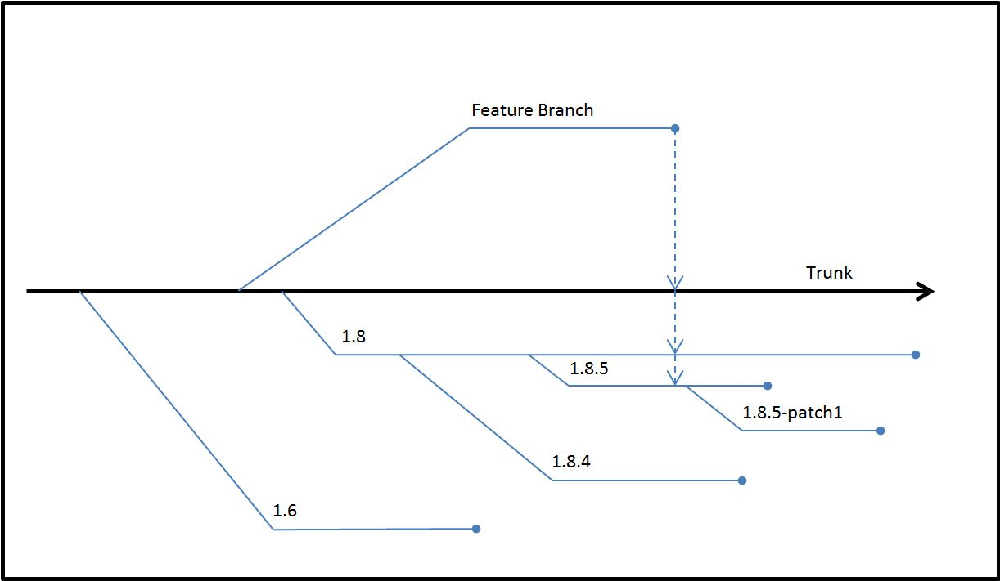

|
HDF5
1.15.0.ce99ebc
API Reference
|

|
|
HDF5
1.15.0.ce99ebc
API Reference
|
|
HDF5 software is updated on a regular basis. These updates, known as releases, range in scope and size from small to large. Some updates may only fix bugs, and some updates may require a change in the format of the data file. The version numbers that are applied to updates give information about the kinds of changes made in the updates. This Tech Note describes what the version numbers mean.
Note that this document describes release version numbers for the HDF5 Library. For more information, see the Shared Library Version Numbers section at the end of this document.
Each software release of the HDF5 Library is labeled with a version number. The version number is a set of three integers written as HDF5-1.2.3, HDF5 version 1.2 release 3, or HDF5 Release 1.2.3. The version number might also include text. A patch version might be labeled HDF5-1.2.3-patch1. The '5' in "HDF5" is part of the product name and will not change during the life of the project.
The key components in HDF5 Library version numbers are the major version number, the minor version number, the release number, and an optional text string.
The first integer in a version number is the major version number. This integer increments when there is an extensive change to the file format or library API. Such a change may require files to be translated and will likely require applications to be modified.
The second integer, 2 in the examples above, is the minor version number. This number is incremented when there are new features that require a change in the file format. For example, a change in file format was required during the change from version 1.6 to version 1.8. Stable released versions of the library are given even minor version numbers such as 1.6 and 1.8 while odd minor version numbers such as 1.7 and 1.9 are used on the trunk for major development. See the section below for more information.
The third integer, 3 in the examples above, is the release number. A change in this number indicates that the library has been updated. The updates might include bug fixes, performance improvements, and new features that do not require a file format change.
A version number might also include some text. The two current possibilities are patch and snap. A patch version might be made to a released version to make available a feature or a bug fix. In the figure below, a patch to the 1.8.5 release is labeled 1.8.5-patch1. A snapshot is an intermediate posting of the software in a branch or in the trunk. Snapshots are made available so that users may begin to test changes in the software that affect their software. The changes may range from bug fixes to new features. Snapshots are made and released regularly. How regularly depends on whether the software passes the tests done on each build. A possible version number for a snapshot might be 1.9-snap81. This version would hold the 81st snapshot off the 1.9 development branch (the current trunk). For the snapshots are available at https://github.com/HDFGroup/hdf5/releases/tag/snapshot.
The HDF Group uses a version control system to manage the HDF5 project. Within the system, a trunk and branches are used to track changes. The version numbers described above identify where a given piece of software was produced in the system. The figure below shows the general scheme.
|
 |
|
Figure 1. The trunk, release branches, and feature branches |
The trunk is the center of the system. New features are implemented in feature branches and aggregated in the trunk. Release branches are then created from the trunk.
The minor version number of the trunk is always an odd number. From the time of Release 1.8.0 to the first 1.10 release, the trunk will be version 1.9. The trunk was version 1.7 from the time of release 1.6.0 until the first 1.8 release.
Projects that add new features, bug fixes, and performance improvements are developed on feature branches. When a project is completed, its feature branch is merged into the trunk. In the figure above, the merging of a feature branch is represented by a dashed arrow from the feature branch to the trunk. If a feature requires a file format change, then the feature will stay in the trunk until the next significant release. This would mean in the figure above that the new feature would be released in a future 1.10 release branch. If a feature does not require a file format change, then it might be merged into one or more release branches. This would mean in the figure above that the new feature could be merged into the 1.8 branch and could be included in the 1.8.6 release. If the feature was added to the 1.8.5 branch, then a patch version might be released.
Release branches hold software that is distributed to general users. In the figure above, a few release branches are shown below the trunk. Work is done in release branches for a period of time. Branches further from the trunk have less work done in them. For example, a patch branch such as 1.8.5-patch1 may contain only one or two changes. A release branch such as 1.8.5 may contain a number of bug fixes and new functions, but these changes are small in number compared to the number of changes in the 1.8 branch.
We aim to make available to the public two maintenance releases a year. The releases occur usually in the spring near May 15 and in the fall near November 15. If two release branches are being maintained, then maintenance releases may be made for each release branch. For example, there was a time when both the 1.6 and 1.8 branches were actively maintained. In one maintenance release, the 1.6.10 and 1.8.4 versions were released at the same time. The 1.6 and 1.8 branches were both actively maintained to give early adopters access to new features and to give most users plenty of time to make the change to 1.8 software from 1.6.
As we improve any branch, we consider the effect of any change on the readability of objects. Applications built, for example, with version 1.8.5 will be able to read data files written with any prior version of the library. So, a 1.8.5 application will be able to read a dataset written with 1.4.5. A 1.8.5 application may be able to read a dataset written under the 1.8.7 library if no new features, features not known to 1.8.5, were used.
The library provides macros and functions to query and check version numbers.
The following constants are defined in the file H5public.h
and determine the version of the include files.
H5_VERS_MAJORH5_VERS_MINORH5_VERS_RELEASEH5_VERS_SUBRELEASEH5_VERS_INFOThe table below describes some of the function calls and macros that can be used to query and check version numbers.
| Table 1. Version function calls and macros | |
| Function Call or Macro | Comments |
H5get_libversion |
This function returns through its arguments the version numbers for the library to which the application is linked. |
H5check |
This macro uses the H5check_version function
to verify that the version number of the HDF5 include file used
to compile the application matches the version number of the
library to which the application is linked. This check occurs
automatically when the first HDF5 file is created or opened and
is important because a mismatch between the include files and the
library is likely to result in corrupted data and/or segmentation
faults. If a mismatch is detected, the library issues an error
message on the standard error stream and aborts. |
H5check_version |
This function is called by the The behavior of this function can be modified by the
|
H5_VERSION_GE and
H5_VERSION_LE |
These macros compare the version of the HDF5 library being used against the version number specified in the parameters. At compile time, they can be used to conditionally include or exclude code based on the library's version. |
H5Pset_libver_bounds |
This function can be used to control the versions of the object formats that will be used when creating objects in a file. |
For more information on these and other function calls and macros, see the HDF5 Reference Manual.
The purpose of this section is to describe how some of the version functions, macros, and constants might be used.
Suppose first that a developer builds an application that will read
from and write to an HDF5 file. When the application is compiled, a
version of the HDF5 Library such as 1.8.6 will be used. The version
constants (H5_VERS_MAJOR, H5_VERS_MINOR,
and H5_VERS_RELEASE) are included in the application when
it is compiled.
Suppose next that a user gets a copy of the application and starts it
up on a workstation. The executable is put into memory along with the
HDF5 Library. However, an application may only work successfully with
the version of the library with which the application was compiled. In
other words, the version of the library that is loaded when the applicati=
on
is started must be the same version as the version of the library with
which the application was compiled. This is verified by the library when
the first HDF5 API routine is called. If an application wants to confirm
early in its startup procedure that the version of the library that will
be loaded into memory at the workstation will work with the application,
then it can use the H5get_libversion and
H5check_version function calls.
The H5_VERSION_GE and H5_VERSION_LE version
macros compare the version of the HDF5 Library being used against the
version number specified in the parameters. At compile time, they can be
used to conditionally include or exclude code based on the library's
version. For example, the link functions, H5Lxxx, are
new in version 1.8, and some group functions, H5Gxxx,
are deprecated in 1.8. With the H5_VERSION_GE macro, an
application could use H5Ldelete if the library version is
1.8.0 or greater, or it could use H5Gunlink if the library
version is less than 1.8.0.
Suppose a data file has three datasets. It is possible that the three
datasets were added to the data file with applications using different
versions of HDF5. The different versions could be 1.4.5, 1.6.10, and
1.8.6. If another dataset is written to the data file, then it will be
written by default in the oldest format possible that has all of the
features needed to successfully write the dataset. If a newer feature
such as compact storage, a new parameter for a function, or a partially
compressed dataset is used, then a newer format will be used.
H5Pset_libver_bounds could be used to specify the oldest
format used. In the situation above, the owners of the data file might
want all data written to the file in the future to be in a 1.8 format
rather than 1.6 or 1.4.
HDF5 shared libraries utilize the libtool versioning system in order to indicate interface compatibility between maintenance releases of HDF5. While we always attempt to maintain interface compatibility between minor maintenance release versions of HDF5, if we are forced to break interface compatibility in order to resolve a critical defect within the library, then the library interface version attached to the shared libraries for a given release will be incremented accordingly.
Please note that this libtool version number for interface compatibility is unrelated to the HDF5 release version for a given release.
 1.9.7
1.9.7